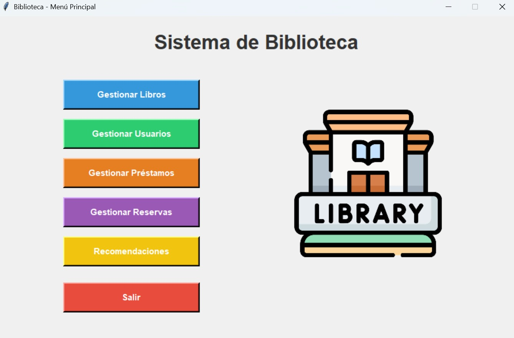

Gestor De Bilbioteca
Este proyecto consiste en el diseño y desarrollo integral de un Sistema de Gestión de Biblioteca de escritorio, construido en Python 3.12+ bajo una estricta arquitectura Modelo-Vista-Controlador (MVC) que desacopla la lógica de negocio de la interfaz de usuario y la persistencia de datos para garantizar la escalabilidad y mantenibilidad del código.
La solución se fundamenta en una base de datos relacional MySQL diseñada meticulosamente bajo las reglas de normalización, implementando tablas intermedias para resolver relaciones complejas entre autores y obras, asegurando así la atomicidad y la eliminación de redundancias en el almacenamiento de la información bibliográfica. A nivel funcional, el sistema integra controladores robustos que ejecutan validaciones transaccionales críticas antes de confirmar cualquier operación gestiona el ciclo de vida de los préstamos verificando en tiempo real la disponibilidad del stock e inventario , aplica reglas de negocio para validar la vigencia de la inscripción de los usuarios calculando automáticamente cuotas por mora Se implementan algoritmos de validación cruzada que impiden la reserva de materiales si el usuario ya cuenta con un préstamo activo del mismo título. La interfaz de usuario, desarrollada con Tkinter y enriquecida con widgets como tkcalendar, permite una interacción fluida y eficiente para la administración de catálogos y usuarios, respaldada por un sistema de integridad referencial que protege la consistencia de los datos en todo momento.